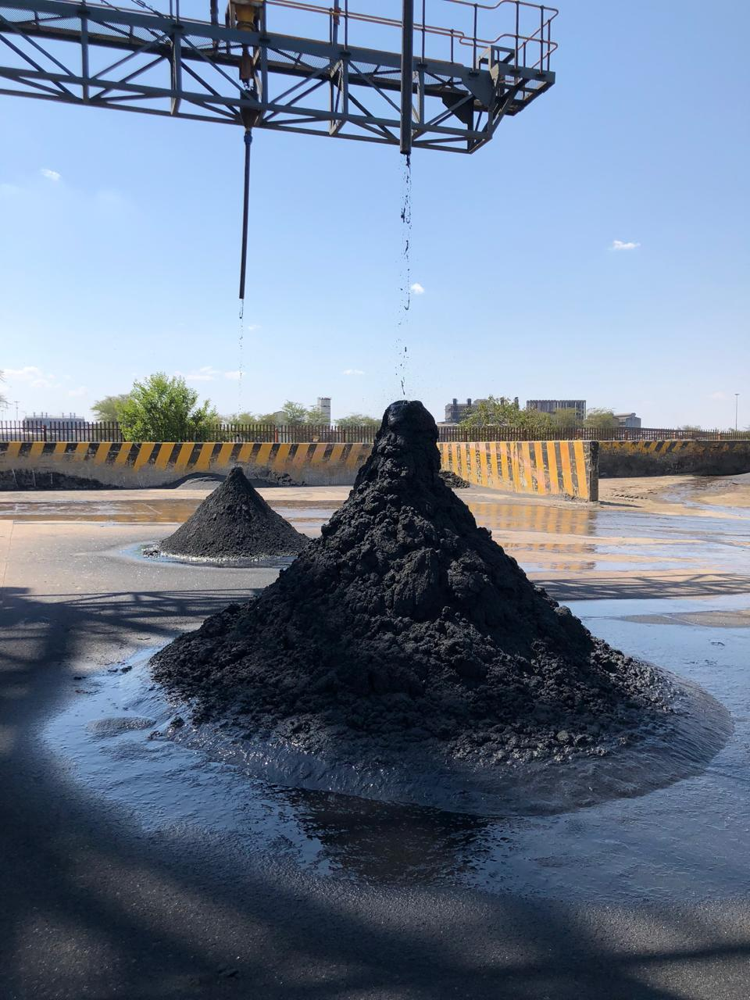

Pioneering Chrome
Processing in SA
Founded in 2017, VK Chrome stands as a pioneering force in the realm of chrome processing. With its headquarters strategically situated in Gauteng and its state-of-the-art operational facility located in Rustenburg, Northwest South Africa, VK Chrome has firmly established itself as a key player in the industry.
What sets VK Chrome apart is not only its technological prowess but also its unique ownership structure. As a 100% black-owned enterprise, VK Chrome represents a remarkable triumph in business diversity — spearheaded by the visionary corporate luminary Vuyisile Kona.
At VK Chrome, precision and quality are paramount. The company's cutting-edge processing techniques ensure the extraction of chrome in an environmentally conscious manner while maximising resource efficiency.

